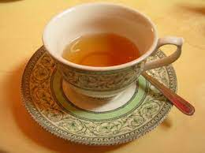

Tea Recipe

Description
This is simply how to make a cup of tea. There is not a set amount of people the recipe will serve. The end amount will be based on the amount of water you use.
Ingredients
- Tea leaves or Tea bags (your preference)
- Water
- Milk (if desired)
Recipe Instructions
- Heat water in a tea kettle. Add amount desired for amount of people who will be served.
- Heat water on medium-high heat until kettle begins to whistle.
- Pour water into tea cup(s).
- Add tea leaves or tea bag to cup(s).
- Allow tea to steep 5-15 minutes. Read the box or bag the tea came in as it sometimes specifies the optimal amount of time to steep.
- Once time for steeping has passed, remove the leaves or bag.
- Add milk if desired.
- Enjoy your cup of tea.